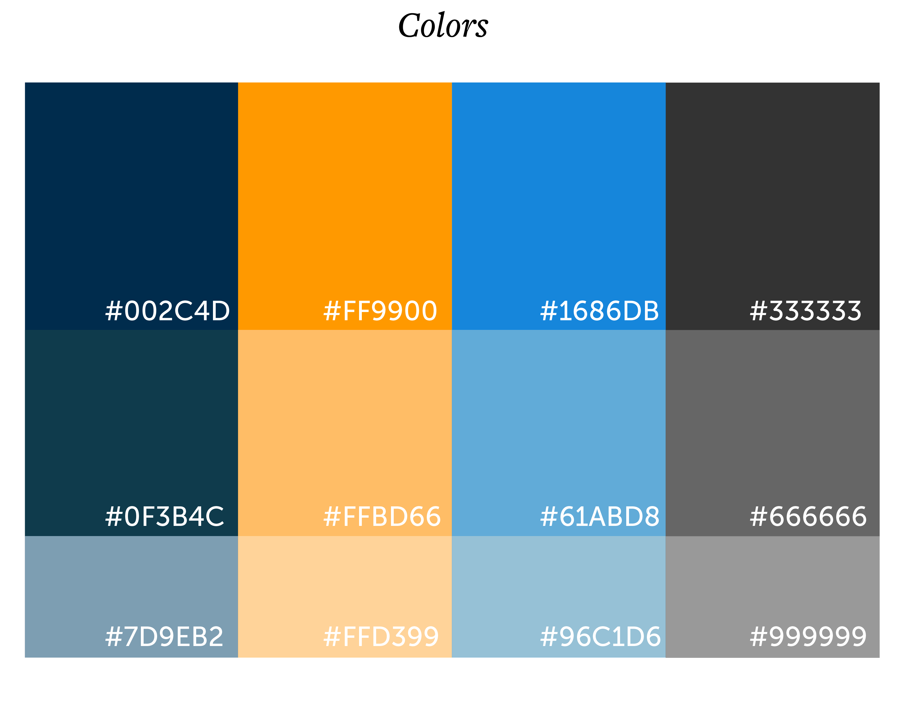
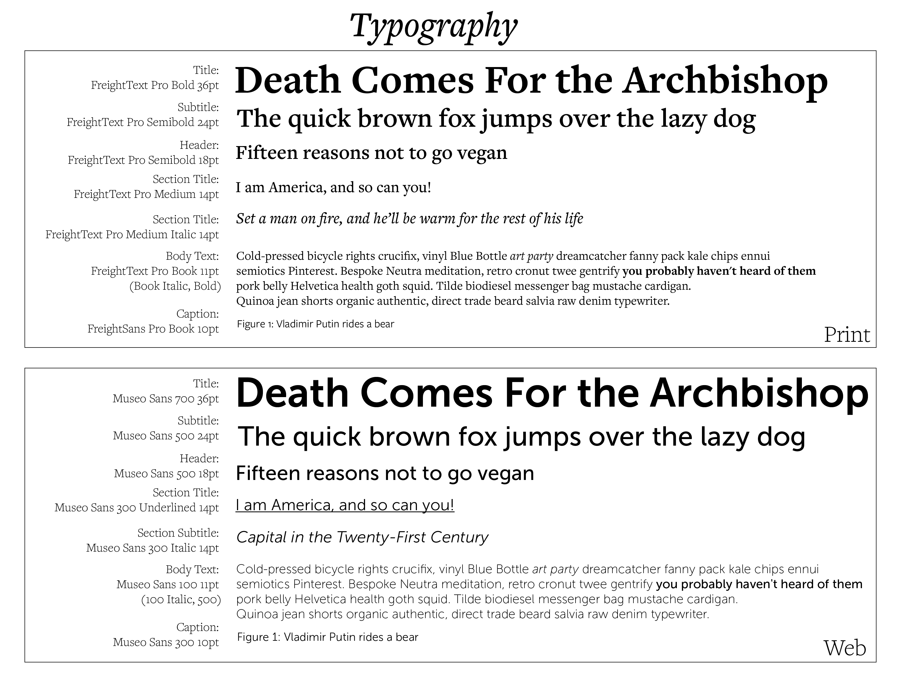
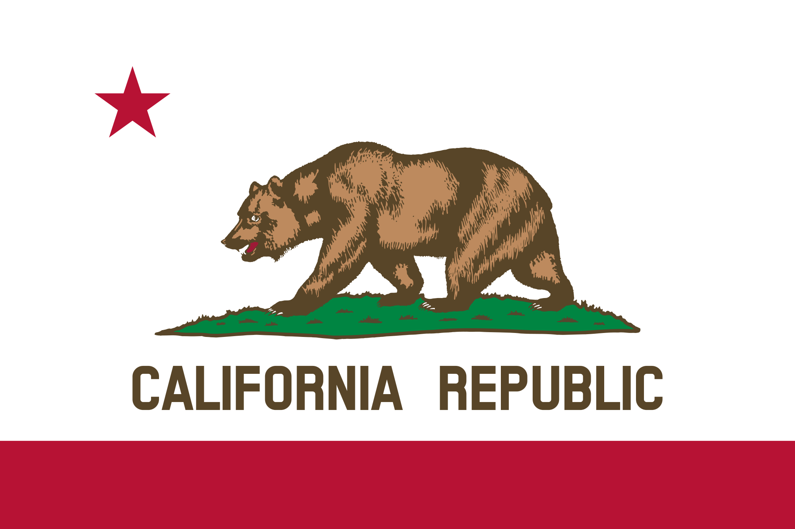
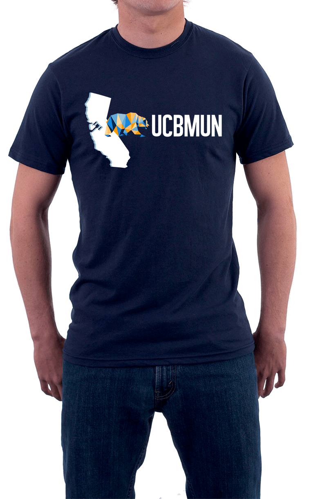
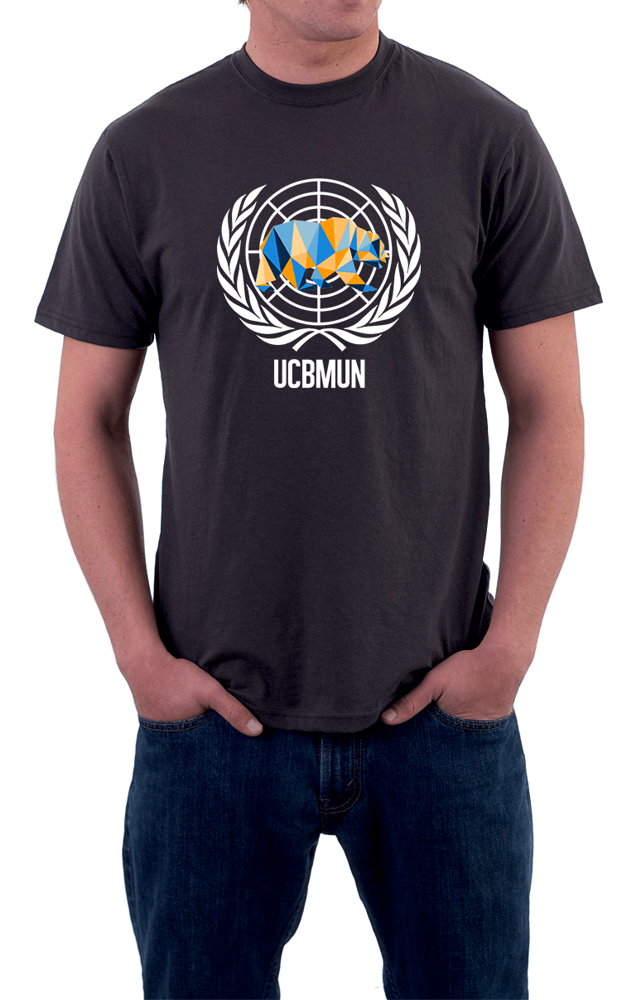

Introduction
As UCBMUN enters its 20th year, I am spearheading a design overhaul that seeks to add consistency and aesthetic relevance to the UCBMUN brand. As the Chief of Staff – Product, I have the honor of redesigning all aspects of the brand from the logo to the print media.
Color & Type
- I chose colors that mirrored the UC Berkeley brand but featured more neutral tones. I wanted a color scheme that would translate well between digital and print media and went with colors that fit a flat UI aesthetic.
- For each key color, I found lighter shades that could be used for more subtle coloring. In general, my intent for both print and digital materials was to use an abundance of negative space with color to highlight important content.
- The new UCBMUN brand features different typography for print and digital media. Especially since we have plans to implement a mobile application, it makes sense that there should be one scheme optimized for devices and a different one optimized for paper.
- Both typefaces were chosen for legibility. Freighttext is the official ont of UC Berkeley, so I thought it an appropriate choice for print materials.
- Museo is a personal favorite of mine for devices.


Logo
- An important aspect of the rebrand was to design a new logo for the conference. To the left is the final design.
- I asked attendees from previous years why they enjoyed our conference, and one of the most common answers was the location in California and the fun vibe.
- To reflect these elements, I wanted the logo to borrow elements from UC Berkeley, the California state flag, and the United Nations.
- I placed an adapted version of the University of California bear over concentric circles reminiscent of the UN logo. For type, I chose Alegre Sans, the typeface msot commonly used to mimic that of the Californian flag.
- When placed side by side, there are clear similarities between the logo and the flag, as was intended.
Website
The conference website reflects the design decisions mentioned above and uses the color and type schemes.
Click the image on the left to see the website in full.
Swag
I wanted the conference merchandise to be colorful, so I designed this low poly bear to use in place of the simple bear shape in the logo:



On the left is a quarter sheet flyer I designed to publicize our conference to potential delegates. On the right is a link to the delegate prospectus that was sent to all previous attending schools.